El relanzamiento
Qué es. En TSP, cuando un equipo ya tiene un plan y la situación cambia, hace un relanzamiento: revisa cómo va frente al plan, actualiza roles, metas y estrategia, y vuelve a planear el trabajo que falta (Lectura 6, sección 7). Pasar el proyecto a GitLab es un cambio de este tipo: el plan de la Entrega 1 se traslada a la herramienta y se ajusta a las semanas que quedan.
Cómo se organiza. La Lectura 6 describe el relanzamiento en varias reuniones. Ustedes pueden agrupar los temas en una o dos sesiones de trabajo y registrar cada sesión en un acta. Esta tabla muestra qué se hace en cada tema y dónde queda en GitLab:
| Tema del relanzamiento | Dónde queda en GitLab |
|---|---|
| Estado del proyecto y objetivos | Wiki Planteamiento del proyecto (etapa 1) y acta |
| Roles y metas del equipo | Wiki Equipo y roles (etapa 1) y acta |
| Estrategia de desarrollo | Acta: orden en que se construyen los requisitos y fases por las que pasa cada uno |
| Plan general y plan de la próxima fase | Requisitos y tareas con responsable, estimación, fechas e hito |
| Planes individuales y consolidación | Carga de cada integrante por semana, revisada en la página de cada hito |
El orden de esta página sigue ese recorrido: primero qué hay que construir (requisitos), después cómo y cuándo (tareas), luego cómo leer el plan, cómo registrar el tiempo y los errores que encuentren y, al final, cómo dejar el acta.
Requisitos
requisito. Las tareas que lo construyen se crean después, dentro de él.Qué es. Un requisito describe algo que el producto debe hacer para el usuario. En su Entrega 1 los escribieron como historias de usuario con criterios de aceptación: los criterios dicen cuándo el requisito está cumplido.
Para qué sirve. El requisito es el punto de partida del plan: de él salen las tareas de diseño, implementación y pruebas. Al registrarlo como issue, GitLab muestra desde el requisito todas sus tareas y su avance, y desde cada tarea a qué requisito pertenece.
Cómo se hace
- Vayan a Elementos de trabajo (Work items) y seleccionen Nuevo elemento (New item). En Tipo (Type) dejen Issue.
- En el título escriban el identificador y el nombre del requisito, con el identificador que usaron en la Entrega 1, por ejemplo
RU_003: Cierre de cuentas. GitLab llama a este campo Cargo (obligatorio) en español y Title en inglés. - En la descripción escriban la historia de usuario y los criterios de aceptación como lista de chequeo. Con el botón de lista de verificación de la barra de herramientas, cada criterio queda con su casilla.
- En el panel derecho, en Etiquetas (Labels), seleccionen Editar, busquen
requisito, márquenla y seleccionen Aplicar. Seleccionen Crear issue.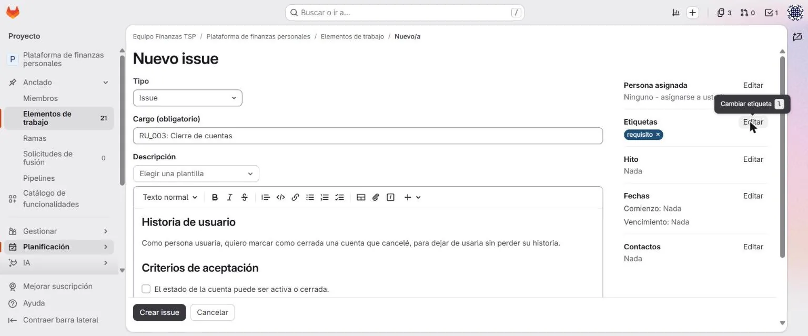
Un requisito: tipo Issue, historia de usuario, criterios de aceptación y etiqueta requisito.
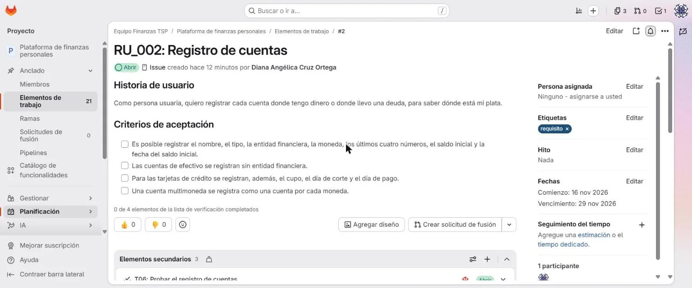
Tareas del plan
Qué es. Una tarea es una unidad de trabajo con un responsable, una estimación de tiempo, unas fechas y una evidencia de que está terminada. En la reunión de planeación TSP el equipo descompone el trabajo en tareas, las estima y les asigna fechas: así cada uno sabe qué tiene que hacer y cuándo (Lectura 5, secciones 4.3 y 4.4). Es lo que hicieron en la tabla 3.2 del Plan de lanzamiento.
Para qué sirve. Con las tareas en GitLab el plan deja de ser una tabla fija: cada tarea muestra quién la tiene, cuánto se estimó, cuánto tiempo se le ha dedicado y si está terminada. La suma de las tareas de una semana es el compromiso de esa semana.
Datos de cada tarea
| Dato del plan | Dónde va en GitLab |
|---|---|
| Nombre de la tarea | Título, con el formato T01: verbo y qué se hace |
| Requisito | La tarea se crea dentro del requisito. GitLab lo muestra en el campo Primario (Parent) |
| Responsable | Persona asignada (Assignee) |
| Horas estimadas | Seguimiento del tiempo (Time tracking) > Agregar estimación (Add estimate) |
| Semana planeada | Hito (Milestone) |
| Fechas | Fechas (Dates): comienzo y vencimiento |
| Fase y evidencia de terminación | Descripción de la tarea |
| Clasificación | Etiqueta tarea |
Cómo se hace
- Abran el requisito y bajen hasta Elementos secundarios (Child items). Seleccionen el botón + y elijan Nuevo task (New task).
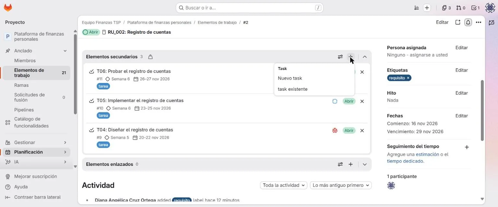
El botón + de Elementos secundarios. - Escriban el título de la tarea y seleccionen Crear task (Create task).
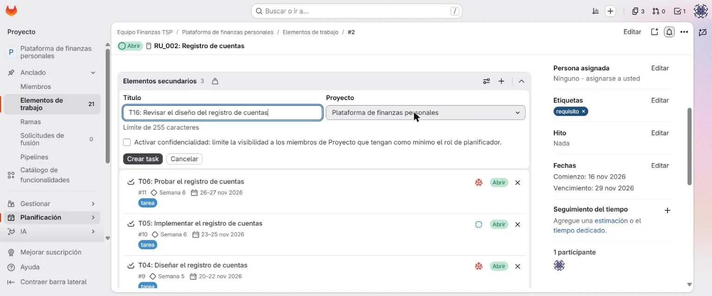
La tarea se crea con su título; los demás datos se completan al abrirla. - Abran la tarea seleccionando su título. En el panel derecho completen Persona asignada, Etiquetas (
tarea) e Hito, cada uno con su botón Editar. - En Fechas (Dates) seleccionen Editar, escriban la fecha de comienzo y la de vencimiento, y seleccionen Aplicar.
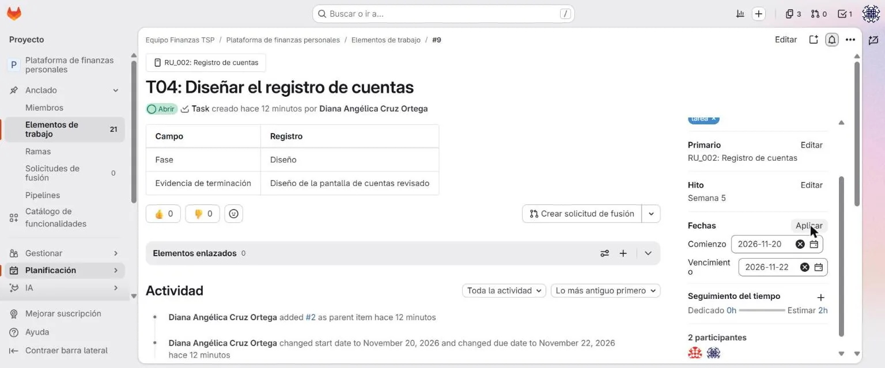
Fechas de comienzo y vencimiento de la tarea. - En Seguimiento del tiempo (Time tracking) seleccionen Agregar estimación (Add estimate), escriban las horas estimadas, por ejemplo
2ho1h 30m, y seleccionen Guardar.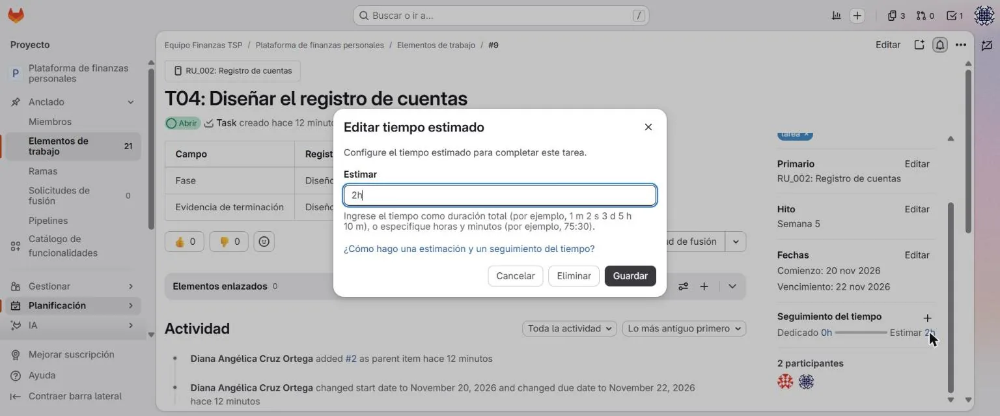
La estimación es el tiempo que el equipo planea dedicar a la tarea. - Seleccionen Editar (Edit), arriba a la derecha, y escriban en la descripción la fase y la evidencia de terminación. Al terminar, guarden los cambios con el botón Guardar (Save).
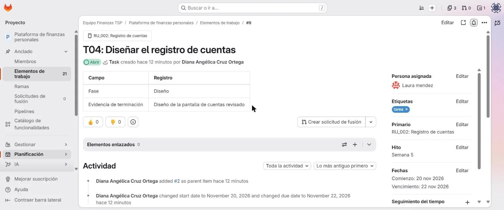
Una tarea completa: fase y evidencia en la descripción; responsable, requisito, hito y fechas en el panel derecho.
Casos que conviene tener claros
- Tareas ya terminadas. Las tareas que terminaron en las semanas anteriores no se crean en GitLab. El avance de esas semanas se describe en el acta, en el tema Estado del proyecto y objetivos.
- Reuniones. En el Plan de lanzamiento registraron las reuniones como tareas. En GitLab cada reunión tiene su acta, y el tiempo de la reunión se registra en el acta; no se crea una tarea para ella.
- Trabajo que no pertenece a un requisito. Para trabajo como montar el proyecto en GitLab o migrar la wiki, creen tareas sin requisito: Nuevo elemento, tipo Task, etiqueta
tareay faseGestión, con su responsable, estimación, fechas e hito.
Cómo se lee el plan
Qué es. El plan del equipo es el conjunto de tareas con sus responsables, estimaciones y fechas. GitLab lo muestra en tres vistas, cada una para una pregunta distinta.
Por requisito: ¿cómo va cada requisito?
Dentro de cada requisito, Elementos secundarios lista sus tareas con su semana, sus fechas, su responsable y su estado. El requisito toma automáticamente sus fechas de las de sus tareas.
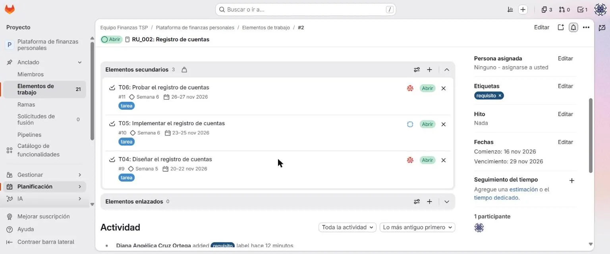
Por semana: ¿qué comprometimos esta semana y cómo vamos?
En Planificación > Hitos (Milestones), abran el hito de la semana. La página agrupa las tareas en no iniciadas, en curso y completadas. Con el botón de doble flecha, arriba a la derecha, se abre el panel con el porcentaje terminado y el tiempo dedicado frente al estimado de toda la semana.
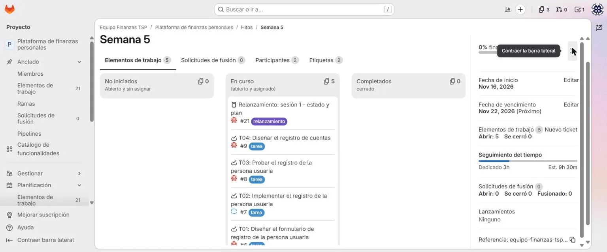
Por persona: ¿cuánto tiene cada uno?
En Elementos de trabajo usen la barra de filtro: Hito para ver una semana y Persona asignada (Assignee) para ver las tareas de un integrante. Así revisan si la carga de cada uno cabe en la disponibilidad que registraron en la wiki.
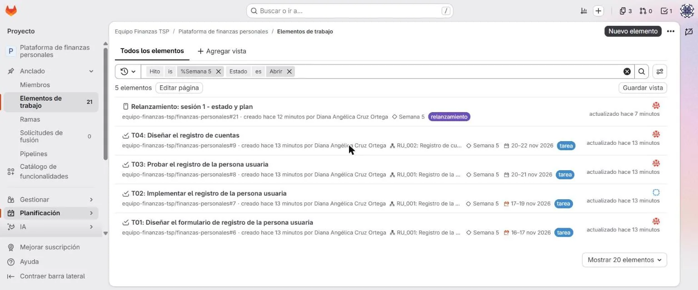
Registro de tiempo
Qué es. Cada integrante registra el tiempo que dedica a sus tareas, con la fecha y la fase. Es la misma medición de PSP, ahora para todo el equipo: el tiempo es una de las cuatro mediciones básicas de TSP, junto con el tamaño, los defectos y el calendario (Lectura 2, sección 3).
Para qué sirve. Al comparar el tiempo dedicado con el estimado, el equipo sabe si va según el plan, y con esos datos mejora sus estimaciones en el siguiente ciclo. El registro de cada uno es también su evidencia de participación.
Estimación y tiempo dedicado
| Estimación (Estimate) | Tiempo dedicado (Time spent) | |
|---|---|---|
| Qué es | El tiempo que se planea dedicar a la tarea | El tiempo que realmente se dedicó |
| Cuándo se registra | Una vez, al planear | Cada vez que alguien trabaja en la tarea |
| Quién lo registra | El equipo, en la planeación | Cada integrante, por su cuenta |
Cómo se hace
- Abran la tarea en la que trabajaron. En Seguimiento del tiempo (Time tracking) seleccionen el botón +.
- Completen el formulario Agregar entrada de tiempo (Add time entry):
- Tiempo dedicado (Time spent): solo horas y minutos, por ejemplo
1h 30mo45m. - Dedicado en (Spent at): el día en que trabajaron, en formato año-mes-día. GitLab no acepta fechas futuras.
- Resumen (Summary): la fase, escrita exactamente como aparece en la tabla de fases.
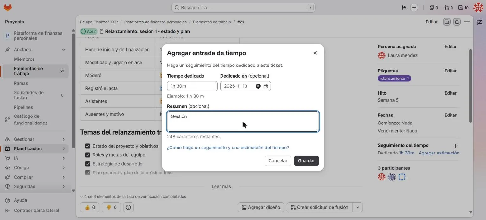
Tiempo dedicado, fecha y la fase en el resumen. - Tiempo dedicado (Time spent): solo horas y minutos, por ejemplo
- Para ver los registros de una tarea, seleccionen el tiempo que aparece junto a Dedicado (Spent). El informe muestra fecha, tiempo, persona y fase. Si un registro quedó mal, bórrenlo con el ícono de la papelera y regístrenlo de nuevo.
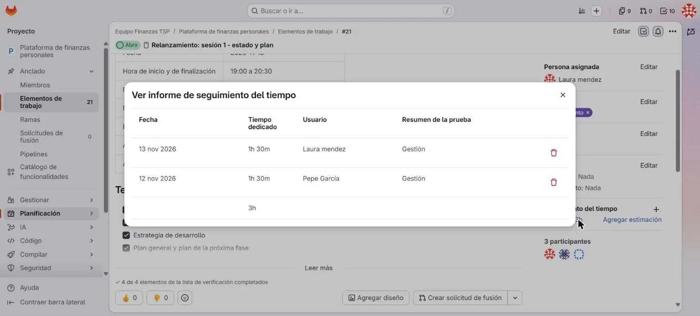
Informe de tiempo de un elemento de trabajo.
Fases
| Fase | Trabajo que incluye |
|---|---|
| Requisitos | Análisis de requisitos y criterios de aceptación |
| Diseño | Diseño de componentes, pantallas y datos |
| Revisión de diseño | Revisión personal del diseño con lista de chequeo |
| Implementación | Programación |
| Revisión de código | Revisión personal del código con lista de chequeo |
| Inspección | Inspección del trabajo de un compañero |
| Pruebas | Diseño y ejecución de pruebas |
| Integración | Integración de componentes y despliegue |
| Corrección | Corrección de un defecto registrado |
| Gestión | Reuniones, planeación, reportes y preparación de entregas |
Reglas del registro
- Registren el tiempo el mismo día en que trabajan.
- Cuenten solo el tiempo efectivo en la tarea, sin interrupciones.
- El tiempo de una reunión lo registra cada participante en el acta de esa reunión, con la fase
Gestión. - Cada uno registra solo su propio tiempo. Si dos personas trabajan en la misma tarea, cada una registra su tiempo en esa tarea.
- Todo el tiempo va en algún elemento de trabajo: una tarea, un acta o un defecto. Si trabajaron en algo que no tiene tarea, primero créenla.
Informe de tiempo del equipo
GitLab tiene un informe con todos los registros del equipo en un periodo. Ábranlo en gitlab.com/-/timelogs, elijan su grupo en Grupo, las fechas en Desde el y Hasta el, y seleccionen Ejecutar informe (Run report). Muestra el total y una fila por registro, con fecha, elemento, persona, tiempo y fase.

Errores detectados
Qué es. En TSP un defecto es cualquier cosa que esté mal en un producto del proyecto y le reste capacidad de cumplir con lo que necesita el usuario. Los defectos aparecen en el código, pero también en los requisitos, los diseños y cualquier otro documento (Lectura 8, sección 1). En esta etapa, los errores que encuentren al revisar su plan, sus requisitos o sus diseños también son defectos.
Para qué sirve. En TSP la calidad se mide con los defectos: dónde se introdujeron, dónde se encontraron y cuánto costó corregirlos. Registrarlos desde el principio les da los primeros datos de calidad del equipo.
defecto.Cómo se hace
- Creen un elemento de trabajo de tipo Issue con un título como
Defecto D01: qué falla y dónde. - En la descripción registren, en una tabla: dónde está el defecto, qué falla, en qué fase se introdujo, en qué fase se encontró, quién lo detectó, cómo se corrigió y quién lo corrigió. Usen los nombres de la tabla de fases.
- En el panel derecho pongan la etiqueta
defecto, el hito de la semana en que lo encontraron y, en Persona asignada, a quien lo corrige. Seleccionen Crear issue.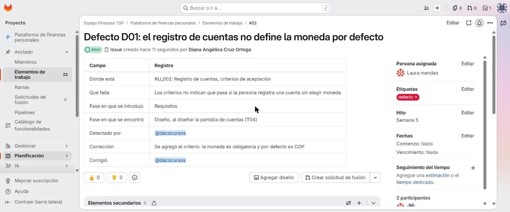
Un defecto encontrado en los criterios de aceptación de un requisito al diseñar su pantalla. - Quien lo corrige registra el tiempo de la corrección en ese mismo elemento, con la fase
Corrección, y lo cierra con Cerrar issue (Close issue) cuando la corrección está hecha.
Acta del relanzamiento
Qué es. El acta es el registro de una sesión del relanzamiento: quiénes asistieron, qué temas se trataron, qué se decidió y qué compromisos quedaron. En TSP las reuniones del lanzamiento y del relanzamiento se nombran y se registran como tales (Actividad evaluativa, Entrega 2).
Para qué sirve. Deja constancia de las decisiones del equipo, entre ellas el cambio de plan que significa pasar a GitLab. Este cambio se registra en las decisiones del acta como versión 2.0 del plan, con su motivo y su efecto en tareas, horas y fechas.
acta-de-relanzamiento.Cómo se hace
- Creen un elemento de trabajo de tipo Issue con un título como
Relanzamiento: sesión 1 - estado y plan. - En Descripción, en Elegir una plantilla (Choose a template), seleccionen
acta-de-relanzamiento. - Diligencien el acta. Marquen los temas tratados y borren las secciones de los temas que no se trataron en esa sesión.
- En el panel derecho asignen el hito de la semana y, en Persona asignada, a quien registró el acta. Seleccionen Crear issue. La etiqueta
relanzamientola pone la plantilla. - Cada participante abre el acta y registra su tiempo de la sesión como se explica en Registro de tiempo, con la fase
Gestión.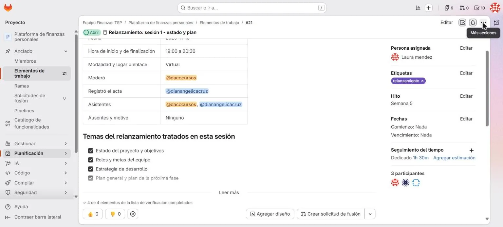
Acta de relanzamiento con su hito, su etiqueta y el tiempo registrado por los participantes.
Verificación de la etapa
Al terminar esta etapa, su proyecto debe tener:
- Los requisitos del ciclo como issues con la etiqueta
requisito, con historia de usuario y criterios de aceptación. - Dentro de cada requisito, sus tareas, cada una con responsable, estimación, fechas, hito, etiqueta
tarea, fase y evidencia de terminación. - En la página de cada hito, una carga que cabe en la disponibilidad del equipo.
- El acta de cada sesión del relanzamiento, con el tiempo de los participantes.
- Registros de tiempo de cada integrante desde el primer día de trabajo, con fecha y fase.
- Los errores que hayan encontrado, registrados con la etiqueta
defecto.